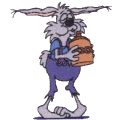

Madison Hash House Harriers
"The Drinking Club with a Running Problem"
Founded 1977
Copyright © 2007 MH3

It's not that hard to set a run. It can't possibly suck as much as last week's trail.
The whole idea is to allow runners of different abilities to stay together. Therefore, the more you mislead and confuse the front runners, the better. Check out the trail marks. Falses and back checks will cause the front runners to turn back and help keep the pack together.
All trails must have at least one beer check. All right, if you insist, you can have more than that. It is good to also provide water at these stops. Beer checks can be at a bar or outside at a park or at someone's garage. It is best not to leave the beer check beer unattended. There are already enough drunk 15-year-olds around here. If you have a beer check in a park, check the posted signs. Most parks do not allow glass. Some parks do not allow alcohol.
Plan out your run ahead of time. 3 to 5 miles is best. It is also good to have some idea how long the run will take so we will finish before the sun sets. (Sunset time lookup) Setting the trail will often take twice as long as it will to actually run it since you will be setting false trails too. Be respectful of No trespassing and private property postings. Also do not cross highways. For some reason, drivers and cops don't like that. It is bad enough when a car hits a deer.
The best plan of attack is to have two hares along on the run - one near the front and one near the back. The person in front can make sure the beer check is attended. Don't be afraid to let the front runners get off trail a little bit. The sweeper can offer the slower runners short cuts or at least tell them the way to go at a check. If you set the trail wisely, though, the pack will stay together on its own.
If it is rainy, consider corn flour. It is thicker and more likely to stay in place. For snow covered areas, use colored flour. You can use a non-toxic carpenter's chalk (check the label) to mix in color (or Kool Aid, powdered tempura paint or jello powder). Be aware that what looks good at high noon may be hard to see in the shadows of twilight.
Plan for 30-40 people. Check with recent hares to see how many people have been showing up and plan accordingly for food an beverage. Don't run out of beer.
Face it, hash cash will not cover all of your expenses. But think of all of those times that you got to eat and drink all evening for $5. Think of it as part of membership and set at least one run a year. It is cheaper to stay out of bars. If you call ahead of time, some will negoatiate a better pitcher or keg price.
People will naturally insult your trail but don't take it personally. We really don't expect much from such a dim-witted person.
Chill out and have fun.
Tools for Mapping trail:
dane county mapping
DNR maps
G Maps
Map My Run